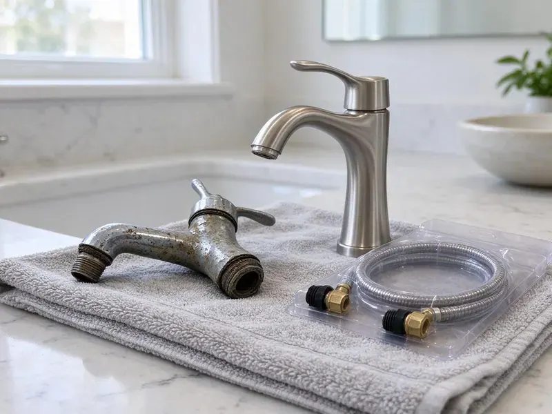

Well Pump Replacement in Tiverton, RI
We replace failed well pumps around Tiverton, RI with submersible pumps sized to your well depth and household demand.
- Written Pricing
- Common Pumps Stocked
- Submersible Pump Specialists
- Labor Warranty

Schedule Well Pump Replacement in Tiverton, RI.
A new pump matched to your well depth, set by licensed plumbers.
Local Well Pump Replacement for Tiverton, RI
JPN Plumbing handles well pump replacement for homes and small businesses across Tiverton, RI. Weak pressure, spitting faucets or a pump that never shuts off usually mean the pump is failing, which we can confirm in under an hour. The fix is often the same day.
Our expertise includes:
- Constant pressure VFD systems for steady flow
- Years of Rhode Island Well System Work
- Well Depth and Yield Checks

Additional Plumbing Replacement Services in Tiverton, RI
When repairs are no longer enough, our replacement services in Tiverton, RI deliver modern, efficient equipment installed right.


Customers
Why Choose JPN Plumbing for Well Pump Replacement in Tiverton, RI?
Sediment and a falling water table both wear on a well pump, and iron or hard water can scale the intake over the years. We look at all of it. Sometimes a sand separator helps.
- Lower Power Bills, A right-sized pump runs less and draws less power than an oversized one.
- Right Equipment, We use powered pump hoists and safety rope on deep wells.
- Steady Pressure, A correctly sized pump and tank hold steady pressure at every faucet.
Citywide Coverage
No-water calls get the closest truck, wherever you are in Tiverton. Our local crews keep the hoist loaded and a few common pumps on board, so most of those calls end with water back on before dark. That includes weekends.
Experienced Team
Licensed and trained on well systems specifically, our crew handles diagnosis and replacement in one visit when the parts are on the truck. Mistakes at depth are expensive. A dropped pump can mean a fishing job.
Safety-First Approach
Grounding the pump motor back to the panel is required by code and it protects anyone who touches a faucet or the well casing. We check it on every job. Local and state rules get followed as written.
Trusted Certified Tiverton Plumbing Services Professionals
At JPN Plumbing, we take pride in licensed, certified plumbing services throughout Tiverton, RI. Credentials matter in this trade. Our plumbers hold recognized industry credentials, and they follow strict safety and quality rules on every repair, installation and maintenance call we run.
Call Us Now PHCC Plumbing Contractor Recognition
PHCC Plumbing Contractor Recognition Better Business Bureau (BBB) Accreditation
Better Business Bureau (BBB) Accreditation Angi Certified Pro
Angi Certified Pro ISO 9001 Quality Management Certification
ISO 9001 Quality Management CertificationWhat We Replace on Well Systems in Tiverton, RI
Emergency Well Pump Replacement in Tiverton
Dry faucets on a well-only property mean no flushing or cooking, so we treat those as same-day calls whenever the crew and the weather allow. The truck carries common 1/2 and 3/4 HP pumps. Splice kits and pressure switches ride along too.

Well Pump Efficiency Upgrades in Tiverton, RI
Older 1 HP pumps running against a 60 psi switch use more power than most people expect, especially on a well with a long horizontal run to the house. Right-sizing the pump or adding a variable-speed drive often trims the electric bill. The math does not always work. We will show you the payback.
Solar Well Pump Systems in Tiverton, RI
Solar well pumps make sense for livestock tanks and cabins where running power from the meter would cost more than the pump itself. A few panels feed a DC pump through a controller while the sun is up. You store water, not electricity. We size panels to your daily gallons.
Well Pump Electrical Troubleshooting in Tiverton, RI
No-water calls often end at the control box, not the pump. On a three-wire submersible, the start capacitor or the relay in that box fails far more often than the motor down the well does. Those get tested first. A $60 part beats a $2,500 pump pull.
Control Box and Pressure Switch Replacement in Tiverton, RI
Not every dry faucet means a dead pump. Pressure switches with burned contacts or a clogged pickup tube can leave the pump sitting idle while the tank drains to zero. A new switch runs about $30 in parts. You get to see the old part.
Constant Pressure Well Pump Installation in Tiverton, RI
Constant pressure systems hold the house at one pressure, say 50 psi, whether one faucet is open or the shower and the irrigation are running together. A variable frequency drive speeds the pump up and slows it down to match demand. No more pressure dip mid-shower.
Pump and Pressure Tank Matching in Tiverton
Pump and tank work as a pair. An undersized or waterlogged tank forces dozens of extra starts a day, and each start puts heat into the motor windings. We check it on every pump job.

Well Pressure Tank Replacement in Tiverton
A waterlogged pressure tank makes a healthy pump look sick. If the pump clicks on every time someone runs a faucet for ten seconds, the bladder in the tank has probably failed and the pump is short cycling itself to death. We check the air charge with a gauge. Precharge should sit about 2 psi below the cut-in pressure.
Nearby Well Pump Replacement in Tiverton, RI
A dry house gets the next available crew. JPN Plumbing serves Tiverton and the rural areas around it, and we keep after-hours coverage for households where the well is the only source of water. Weekends count too.
Local plumbers who know Rhode Island well depths and water quality bring the right hoist and the right pump on the first trip out to your property. You get the price before work begins. We book fast.
JPN Plumbing at a Glance
- Licensed and insured plumbers serving Tiverton, RI
- Same-day appointments and 24/7 emergency response
- Clear written estimates, no hidden fees
- 4.8-star rated by 684+ Rhode Island customers
Tiverton Map
Tiverton Information
- Population
- 7,809
- Area codes
- Local
- Service area
- Tiverton and towns within a 40 mile drive
- Nearby
- Newport East, Warwick, East Providence, Newport
Well depth and shifting water levels decide what pump goes in on homes in Tiverton, RI.
Talk to a Plumber
Call JPN Plumbing for honest, reliable plumbing from people who know the trade in Tiverton, RI.
Our Specialized Plumbing Services in Tiverton, RI
At JPN Plumbing, you get every kind of plumbing service from one company across Tiverton, RI. From leak detection to full system installs, our team works fast and charges fair prices on homes and commercial properties alike. Here are the core services we offer:


Our Well Pump Replacement Steps in Tiverton, RI
JPN Plumbing keeps the process simple, from the first test to the final pressure check.
Call Us
Call (401) 364-2507 and tell us about your well. We schedule a visit for testing.
Test the Controls
We test the switch, wiring and tank. Then we confirm whether the pump needs replacing.
Pull and Replace
We pull the old pump and set the new one with new wire and pipe as needed. We test pressure and flow before leaving.
Frequently Asked Questions About Well Pump Replacement in Tiverton
Expect $1,800 to $4,500 depending on depth and pump size. Deep wells or constant pressure systems can reach $4,000 to $8,000.
Grundfos, Goulds and Franklin Electric. Parts are easy to get for all three.
It depends on where you live. Some counties require a well permit or an inspection for pump replacement, and others only care if you change the well head or the electrical service. We pull permits when they are required.
One to five years from the manufacturer, typically. Our labor warranty is separate.
Goulds, Grundfos, Franklin Electric and Sta-Rite, mostly. Which one we recommend depends on your well depth, the water quality and whether you want steady constant pressure at every faucet. All four have parts on supply house shelves.
Yes, alone or with a pump. A tank with a failed bladder will short cycle even a brand new pump, so we test the air charge on every well call we run. Most tank replacements take a couple of hours.
Eight to fifteen years is common. Sediment and frequent cycling shorten that.
Shallow well pumps, usually jet pumps, sit above ground and pull water by suction from about 25 feet or less. Submersibles go down in the water and push it to the surface. Suction cannot lift much past 25 feet.
What People Are Saying About Our Plumbing Experts?

Nathan E.
Our tankless heater kept throwing an error code and shutting off mid shower. The tech flushed the heat exchanger, which was full of scale, and replaced a bad flow sensor. Hot water has been steady for half a year now.
Water Heater Repair · Tiverton, RI
Monica A.
Our water bill nearly doubled in one month with no change in how we used water. The tech checked the meter, heard the leak under the hallway with his equipment, and opened a hole about a foot square. Fixed the same day.
Slab Leak Repair · East Providence, RI
Robert G.
The camera showed a full break in our clay sewer line near the street. JPN Plumbing replaced it with a trenchless pipe burst, so the only digging was two small pits in the yard. They let us watch the footage before and after.
Sewer Line Replacement · East Providence, RI
Karen W.
After our third pinhole leak in copper, we stopped patching. JPN Plumbing gave us a written plan room by room and repiped the house in PEX while we stayed in it. The crew covered our floors every morning and cleaned up every night.
Repiping · Newport East, RILaura S.
Our 40 gallon tank started leaking from the bottom after thirteen years. The tech hauled the old one out, set a new unit with a fresh expansion tank, and had hot water running in about four hours. He took the old tank with him too.
Water Heater Replacement · Tiverton, RIJames P.
Our restaurant had a slow leak at the hand sink that was rotting the cabinet base. JPN Plumbing came in at six in the morning before prep, replaced the trap and both supply lines, and was packed up before my first cook clocked in.
Commercial Plumbing · East Providence, RI